Archivio tecnico
Progetti di elettronica, radio e antenne.
Schemi, misure e prove di laboratorio di Roberto Chirio — antenne attive per HF e VLF, generatori a radiofrequenza, alimentatori switching, illuminazione a LED, contatori Geiger e caratterizzazione di batterie, raccolti in un unico archivio consultabile.
66 pagine tecniche7 categoriearchivio storico Chaberton
Roberto Chirio · info@chirio.com
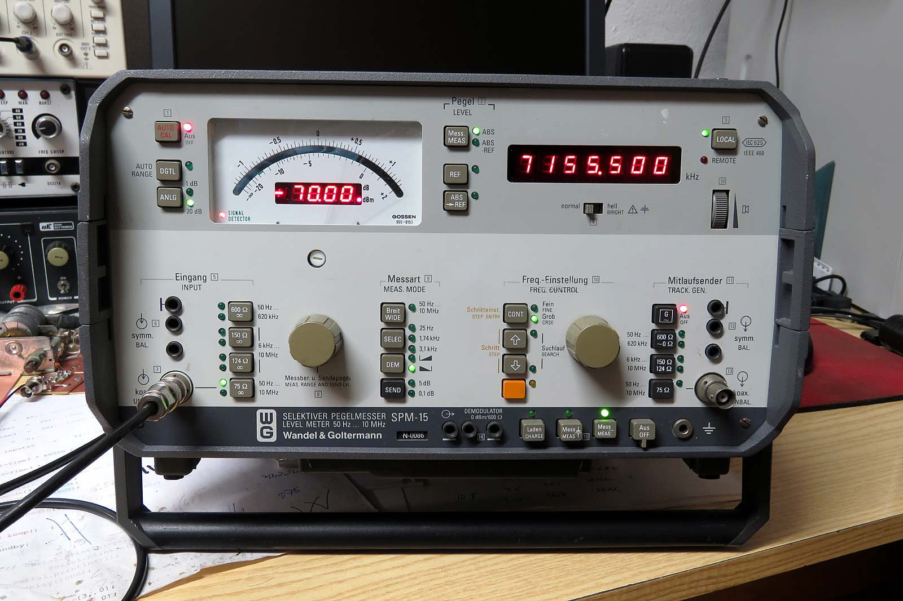
Inizia da qui
Tre pagine che spiegano le basi usate in tutto il resto dell’archivio.
Progetti in evidenza
Le realizzazioni più complete, con schemi, misure e fotografie.
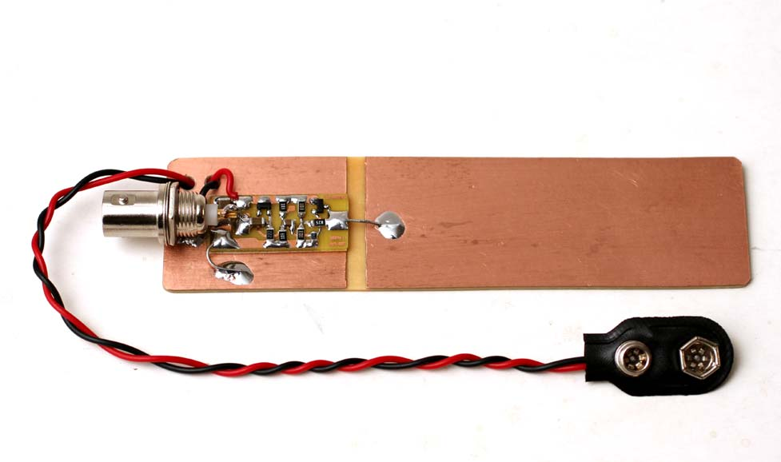
Radio & antenne Mini Whip — antenna attiva HF/VLF L’antenna capacitiva da 10 kHz a 30 MHz che dà il nome al progetto più seguito del sito, in cinque versioni. Radioattività
Misura ambientale delle radiazioni
Un contatore Geiger collegato al PC per registrare il fondo naturale e le sue variazioni.
Radioattività
Misura ambientale delle radiazioni
Un contatore Geiger collegato al PC per registrare il fondo naturale e le sue variazioni.
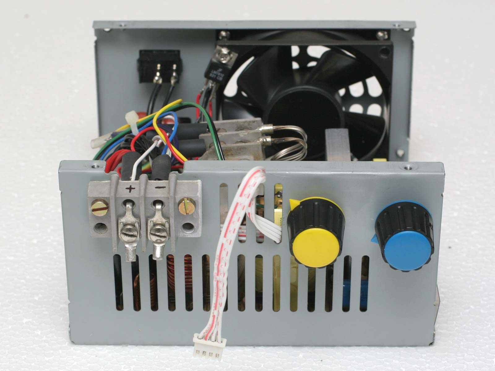
Alimentatori Alimentatore da laboratorio da un ATX Come trasformare un alimentatore per computer in uno strumento da banco regolabile e protetto.Sfoglia per categoria
66 pagine tecniche in sette aree.
Archivio completo
Ogni categoria si apre sull’elenco delle sue pagine.
Radio Corner — antenne e radiofrequenza17
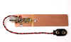
Mini Whip — antenna attiva HF/VLF10 kHz – 30 MHz, antenna attiva capacitiva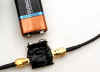
Mini Whip SDR — antenna attivaVersione per ricevitori SDR, base fissa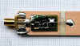
Mini Whip SDR+ — antenna attivaVersione SDR+ per banda HF e VLF- Mini Whip — tricks & tipsConsigli per montare la MiniWhip e ridurre i disturbi
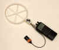
Mini Loop — antenna attivaAntenna a loop attiva 10 kHz – 30 MHz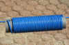
Antenna filare 40 mt bandDipolo per la banda dei 40 mt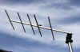
Antenna Yagi PMRYagi per banda PMR 446 MHz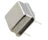
RF Oscillator — generatore 20 MHz – 4 GHzHarmonic comb generator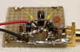
Generatore RF 2700 MHz2700 MHz generator, microonde 2018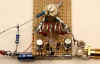
VHF generator 70–500 MHzOscillatore per VHF/UHF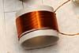
RF VFO Oscillator a 2 FETOscillatore variabile per banda HF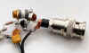
Effetto tunnel — generatore microondeGeneratore 1000–4000 MHz a diodo tunnel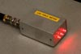
RF field meter a LEDRilevatore di campo a radiofrequenza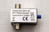
Attenuatore variabile −20 dBm10 kHz – 3000 MHz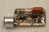
Spy Bug FM TransmitterMicrotrasmettitori FM a transistor, spie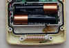
Sensori 433 MHz sensor wirelessCome aumentare la distanza di collegamento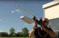
Anti drone / drone jammerRilevazione e disturbo dei radiocomandi
Alimentatori e convertitori6
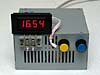
ATX lab power supplyAlimentatore da laboratorio da un ATX- Alimentatore ATX 12 V 30 AConversione ATX per uso da banco
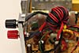
ATX 13.8V power supplyModifiche per aumentare la tensione d'uscita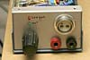
Step-up 10A 16VConvertitore switching elevatore 12 V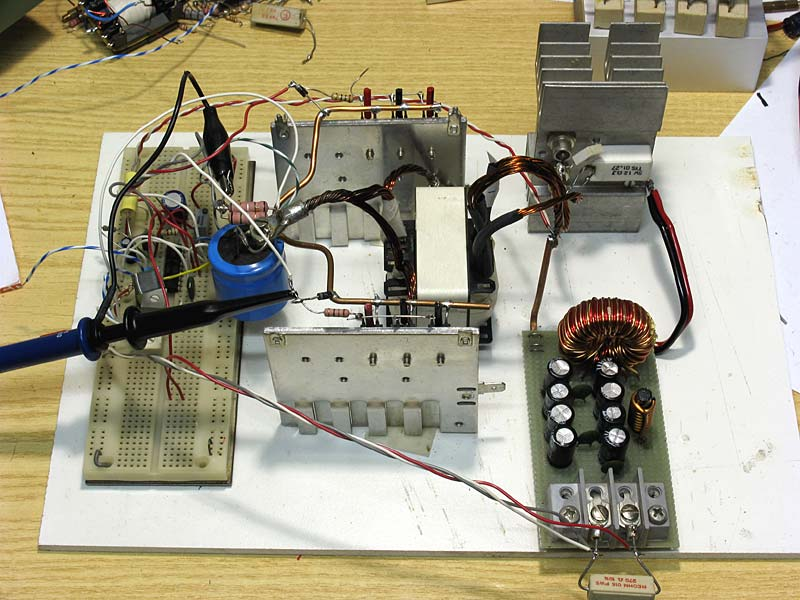
Push-pull DC-DC 12V 20A 16V 250WAnche 12V 40+40V 400W: electronics design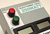
Electronic Load 20A 40VCarico elettronico fino a 400 W
Batterie, accumulatori ed energia12
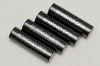
Come testare l'autonomia delle batterie Ni-MhFai da te: metodo di misura e risultati comparati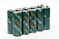
Ni-Mh fast chargerCaricabatterie automatico da 1 a 4 celle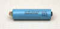
Litio (Li-Po) chargerCaricabatteria bilanciato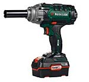
Parkside paccobatteria 20V 15AhRealizzazione di un pacco maggiorato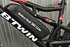
E-bike — test batterie 36/48 VProve di capacità su pacchi per e-bike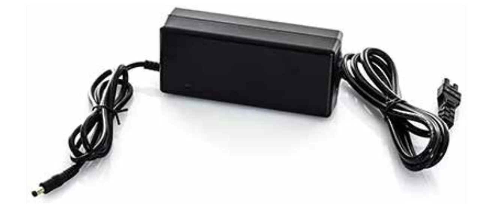
E-bike — extra pack 36/48 VPacco batteria supplementare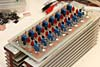
BMS 48V 4ABattery Management System per e-bike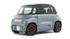
Auto elettrica: che fare?Considerazioni su batterie, costi e autonomia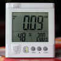
Come risparmiare energia elettrica in casaConsumare meno: consumi domestici, misure e interventi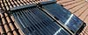
Centralina solare termicoControllo differenziale per pannello Heat Pipe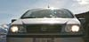
Quanto ci costa tenere sempre accese le luci in auto?Calcolo del consumo dei fari in automobile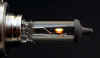
Come aumentare la durata delle lampade autoLampade più recenti, tensione e vita utile
LED e illuminazione15
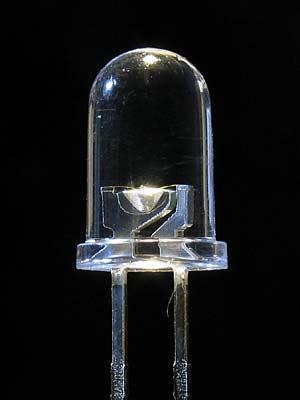
Cosa è un LEDCome si alimenta un light emitting diode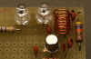
Utilizzo diverso dei ledIl led come sensore e altre applicazioni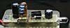
Un LED con una stilo da 1,5 VAlimentare LED 5 mm e 10 mm da singola cella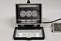
Lampade a LED con il 220 VRealizzazione di lampade da rete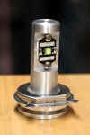
Lampada LED sostituzione H4Prove di sostituzione dei fari auto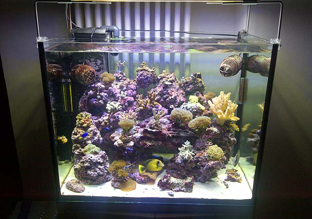
Illuminare un acquario a LEDSoluzioni e schemi di alimentazione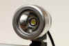
BK3/S — proiettore LED 10 WProiettore stagno per uso professionale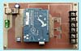
Dimmer RGB 3 canali 12 V 10 APer plafoniere LED e strisce RGB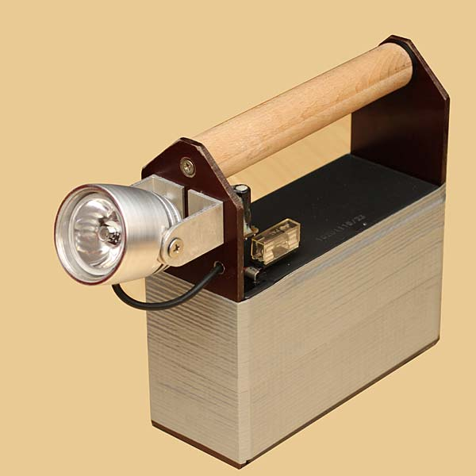
Illuminatore video 3× Seoul P7Lampada video ad alta potenza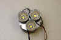
Video lamp 3× LED P7Illuminatore per riprese video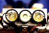
BIKE-TRILED 2008Illuminazione per gare notturne di MTB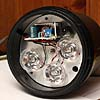
Torcia sub 3 LED Seoul Z-P4Circa 720 lumen, uso subacqueo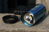
Torcia sub 1 LED Seoul P7Circa 900 lumen, modifica torcia sub Test di illuminazione con torce LEDConfronto fra torce e lampade, oppure fra ottiche diverse
Test di illuminazione con torce LEDConfronto fra torce e lampade, oppure fra ottiche diverse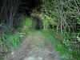
Test MagicShineProva su strada di lampade per MTB
Contatori Geiger e radioattività6
- Geiger Counter PC CDVSistema per la misura ambientale delle radiazioni
- Geiger counter con ArduinoContatore di radiazioni digitale
- Calibratore per Geiger counterGeiger Pulsar e calibrazione
- HV Voltmeter 1000 MΩMisura dell'alta tensione del Geiger counter
- RAM 63 — miglioramentiModifiche a un contatore Geiger militare
- FAG SV500 — upgradeAggiornamento di un Geiger counter FAG
Misure, strumenti e laboratorio4
Fotografia, meccanica e altri progetti6
- Flash macro made simpleUn semplice flash per la macrofotografia
- MONOPIEDE photo economicoRealizzato con un bastoncino da trekking
- Steady cam made simpleStabilizzatore video autocostruito
- Printer 3DStampa 3D: esperienze e note
- How to pimp your Perego JeepElettronica, motore e batterie per l'auto dei bambini
- Gomme chiodate per MTBRealizzazione con viti parker
Documenti e note legali2
{kind=link}
In volo con aereo a motore sulla valle Susa, fotografando verso il basso: paesi e viste mozzafiato con foto spettacolari sulle montagne della Valle di Susa.
Archivio storico
La Batteria dello Chaberton
A 3130 metri, la fortificazione più alta d’Europa. Una pubblicazione virtuale con la storia, le fortificazioni, i tunnel, la teleferica, le panoramiche a 360° e 185 pagine di fotografie e video d’archivio.
Storia Fortificazioni Tunnel Teleferica Panoramiche 360° Gallerie fotografiche